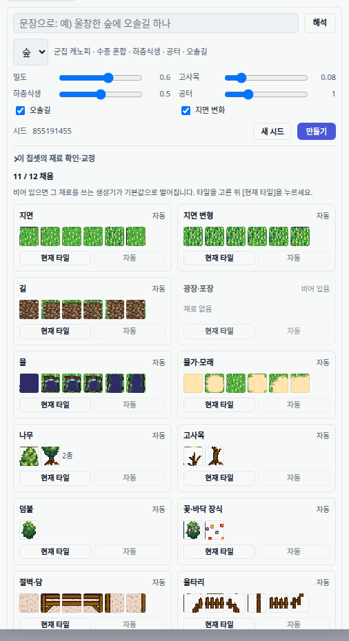
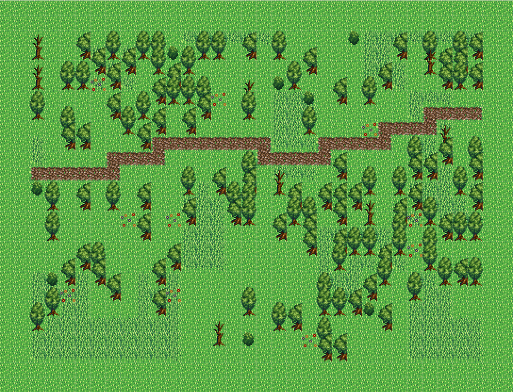
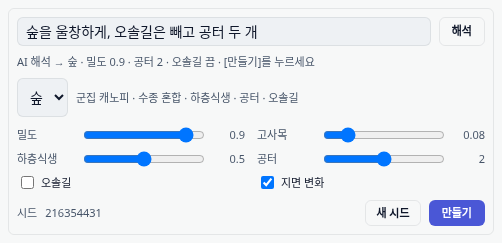
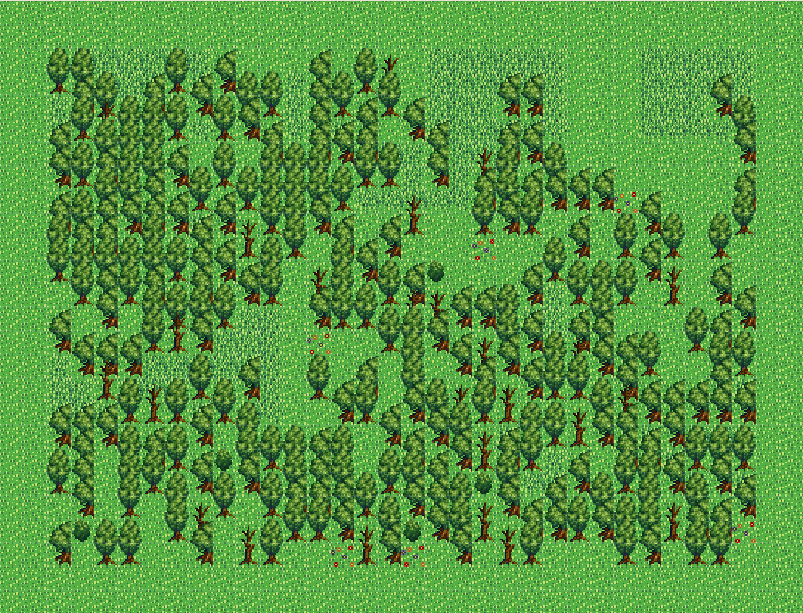
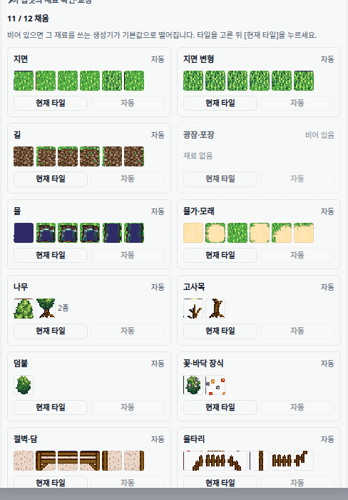

생성기 모드 — 무엇이 만들어졌나
"AI 가 지형을 못 깐다" 를 고치기 위해 기존 조수 흐름을 한 줄도 지우지 않고 두 번째 길을 냈다. 이 문서의 모든 화면은 이 리포의 실제 에디터 스크린샷이다 — 목업이 아니다.
이제 지형을 만드는 길이 셋이다
전에는 하나였다 — 문장을 넣으면 LLM 이 타일 좌표까지 직접 찍는 길. 그 길은 그대로 두고 둘을 더 냈다.
| 길 | 입력 | LLM 이 하는 일 | 타일을 까는 주체 | 상태 |
|---|---|---|---|---|
| 조수 (기본) | 문장 | 전부 — 좌표·타일 인덱스까지 | LLM | 기존 그대로 |
| 생성기 | 슬라이더 + 시드 | 없음 (0콜) | 코드 | 신규 |
| 생성기 + 해석 | 문장 | JSON 한 줄만 | 코드 | 신규 |
조수 모드는 스위치 한 줄만 늘었다
기본값은 언제나 조수다. 저장값이 깨졌거나 localStorage 가 막혀도 조수로 떨어진다 — 이 기능이 통째로 죽어도 지금까지 쓰던 화면이 그대로 뜬다.
조수 | 생성기 스위치를 뺀 나머지 — 추천 칩, 문장 입력창, 「AI 없이 실내 초안」,
「주변과 어울리게 다듬기」, 「AI 실행」 — 은 이전과 동일하다. 기존 코드 삭제 0줄.
hidden 을 건드리지 않고 부모 클래스 .is-operator-mode 로만 가린다.
카테고리 시트·자동완성은 자기 열림 상태를 hidden 으로 들고 있어서, 직접 지우면 모드를 되돌릴 때
닫혀 있어야 할 것이 열린 채로 나타난다. 브라우저에서 복귀 후 둘 다 닫힘 유지를 확인했다.
생성기 모드 — 문장 대신 파라미터
생성기를 고르면 문장 입력창이 사라지고 슬라이더·시드가 뜬다. AI 를 한 번도 부르지 않는다.



의도 파서 — 모델의 출력 표면은 JSON 한 줄
문장을 넣으면 모델이 읽어 슬라이더를 채운다. 타일 번호도 좌표도 모델을 거치지 않는다.
입력 "숲을 울창하게, 오솔길은 빼고 공터 두 개" 모델이 낸 것 (전부) { "op": "forest", "params": { "density": 0.9, "clearings": 2, "path": false } } 코드가 한 것 나무 307그루 · 길 타일 0개 · 공터 2개 · 565칸


| 상황 | 동작 | 화면 표시 |
|---|---|---|
| LLM 정상 | JSON 파싱 → 스펙으로 검증·클램프 → 슬라이더 반영 | AI 해석 |
| LLM 없음 / 401 / 형식 위반 | 키워드 해석으로 폴백 (울창→0.9, 듬성→0.3, 길 없→path:false …) | AI 미사용 |
| 20초 초과 | 끊고 키워드 폴백 | AI 미사용 |
| 둘 다 실패 | 설정을 바꾸지 않고 오류만 표시 | 빨간 안내 |
재료 슬롯 — 오퍼레이터가 타일 번호를 모른다
처음 forest 는 GRASS_BASE=240·SPECIES=[[260,290]] 처럼 타일 번호를 상수로 박아
칩셋 하나에서만 돌았다. 오퍼레이터를 늘릴수록 그 하드코딩이 배로 늘기 때문에, water·village 를 만들기 전에 이 층을 세웠다.
해석은 3단 — 저장하는 것은 "사람이 고친 것" 뿐이다 ① 사용자 오버라이드 (tileset.materialSlots) ← 보드에서 고친 값. 최우선 ② 승인 어휘 그룹 매칭 (tileGroups) ← 번들 칩셋은 여기서 전부 채워진다 ③ 없음 ← 그 재료를 쓰는 오퍼레이터는 기본값으로
슬롯을 별도로 저장하지 않는 이유: 승인 어휘에 역할·타일·통행·패턴이 이미 다 있다. 복제하면 "진실이 두 갈래" 라는, 이번 개편이 없애려던 바로 그 병이 재발한다.

| 동작 | 의미 |
|---|---|
| 「현재 타일」 | 붓에 물린 타일로 그 슬롯을 고정 → source: user. 다음 생성부터 즉시 반영 |
| 「자동」 | 값을 다시 계산해 넣는 게 아니라 오버라이드를 지운다 — 어휘가 바뀌면 자동 해석이 다시 따라가야 하니까 |
실측: 지면 슬롯을 360 으로 덮자 생성 결과의 하위 타일 1위가 360(279칸) 으로 바뀌었다.
낯선 타일(700/800/900)만 준 팔레트로도 숲이 서고 combined_town 타일이 새지 않는 것을 테스트로 고정했다.
"뻔한 숲" 이 무엇이었는지


오솔길은 나무보다 먼저 새겨지므로 통행 회랑이 구성 단계에서 보장된다 — 사후 검증이 아니다.
density · deadRatio · underbrush · clearings · path.구현 중 잡은 결함 7건
전부 테스트나 브라우저 실사에서 나왔다. 이 목록이 곧 "왜 슬롯 보드가 필요한가" 의 답이다.
| # | 결함 | 고친 방법 | 발견 |
|---|---|---|---|
| 1 | 오토타일 그룹의 tileIds[0] 은 모서리다 — 그대로 칠하면 길 한복판에 모서리 무늬가 깔린다 | patternGrammar 의 center 파트를 본체로 (흙길 390 → 421) | 실사 |
| 2 | 활엽수는 2×2 라 앞 두 타일(262·263)이 수관 좌·우다. 세로로 쌓으면 나무가 깨진다 | source_rect 는 [0] 과 [minWidth] 로 좌측 열(262/292)을 읽는다 | 테스트 |
| 3 | id 접미사 "tree" 가 "dry-tree" 까지 삼켜 고사목이 일반 나무에 섞였다 | 매처에 exclude 추가 | 테스트 |
| 4 | 고사목 폴백 누수 — 낯선 칩셋에 combined_town 마른나무(261/291)가 박혔다 | 나무 재료가 통째로 없을 때만 폴백 | 테스트 |
| 5 | 하네스 forest() 가 슬롯을 안 거쳐 헤드리스 검증이 사용자 화면과 달랐다 | 하네스도 같은 팔레트 유도 경로로 | 실사 |
| 6 | 보드가 타일셋을 직접 고치는데 store 에 안 알려 화면엔 반영, 저장은 안 됨 | 고친 뒤 store 에 다시 싣기 | 코드 검토 |
| 7 | 의도 파서에 타임아웃이 없어 "해석 중…" 에서 입력창이 잠긴 채 남았다 | 20초 상한 + 키워드 폴백 | 실사 |
근거
| 항목 | 결과 |
|---|---|
| 신규 테스트 | 60개 — forest 불변식 6 · 모드/승인/모달 19 · 의도 파서 15 · 슬롯 해석 11 · 보드 10 (일부 파일 중복 집계 없음) |
| 회귀 | 0 — 관련 90개(regionTaskModal · regionTaskModalEnhancements · pendingRegionApply 포함) 전부 통과 |
| 타입 | 신규 소스 에러 0 (tsc --noEmit) |
| 기존 코드 삭제 | 0줄 — 순수 추가 |
| 실사(브라우저) | 모드 전환 · 파라미터 생성 · 문장 해석(실제 LLM 응답) · 승인 · 적용 · 조수 복귀 · 보드 편집 → 생성 반영 |
| 알려진 무관 실패 | regionIntentExposure 3건 — clean HEAD 워크트리에서도 동일하게 실패하는 기준선 결함 |
불변식으로 고정한 것
- 같은 시드·같은 입력 → 같은 숲 (결정성)
- 모든 쓰기는 선택 영역 안 (경계)
- 밑동마다 바로 위에 수관 (떠 있는 나무 금지)
- 지면이 아닌 칸(집·벽)은 불가침 (구조물 보호)
- density 증가 → 나무 수 증가 (단조성)
- 오솔길은 4-연결 단일 성분 (통행 보장)
- 생성기 실행 시 조수 러너가 호출되지 않음 (모드 격리)
- 모델이 낸 스펙 밖 키(
tileId주입 등)는 생성기에 닿기 전에 잘림
남은 것
| 단계 | 내용 | 상태 |
|---|---|---|
| 1 | 재료 슬롯 층 + 보드 | 완료 |
| 2 | 견본 분해 온보딩 — 사용자가 10×10 견본을 그리면 vision 1회로 슬롯 초안 제안 | 다음 |
| 3 | 오퍼레이터 확장 — water · scatter · clear → village · road · field | 대기 |
| 4 | 변형 3장 썸네일 UX (시드 3개 동시 렌더 → 클릭 선택) | 대기 |
| 5 | 구 경로 철거 — volumeContract · WorkPlan/Ralph · buildSpec 게이트 · 시맨틱 테이블 (약 6천 줄) | 신경로 검증 후 |
operatorRegistry.ts 에 항목 하나만 더하면
파라미터 UI · 의도 파서 프롬프트 · 하네스에 자동으로 나타난다. 그리고 타일 번호 대신 슬롯을 참조하므로
칩셋과 무관하게 돈다 — 이 두 계약을 먼저 세우려고 1단계를 앞에 뒀다.